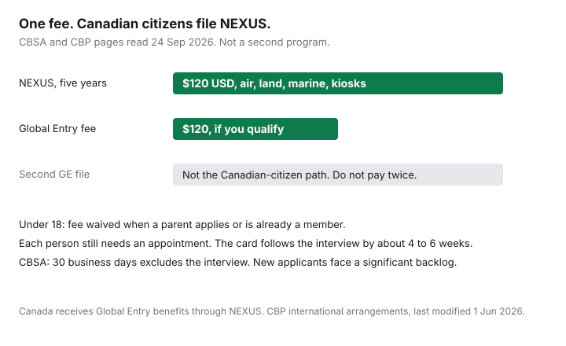

Travel · Canada
NEXUS vs Global Entry for Canadians: Which Trusted Traveller Path Fits?
A US travel site tells a Canadian household to “get Global Entry.” The same household then starts a second application, or picks the program that does not match the crossings they actually make. For a Canadian citizen or a permanent resident of Canada, the trusted-traveller path that includes US airport kiosks is NEXUS. US Customs and Border Protection does not list Canada among the countries whose citizens file a standalone Global Entry application. CBP’s international arrangements page says Canada is eligible for Global Entry benefits through NEXUS membership.
Figures below were read on 24 Sep 2026 from CBSA, CBP, and CATSA pages. Interview calendars move. The Trusted Traveller Programs account is the status that matters. This page does not rank credit cards that reimburse a fee.
Disclosure: There is no natural retail offer on this choice. Saving Optimizer does not claim a NEXUS, Global Entry, or screening partnership. A card that reimburses a trusted-traveller fee is a benefit you already hold. This page does not rank cards. Education only.
Key takeaways
- Canadian citizens and permanent residents apply for NEXUS. CBP routes Canada’s Global Entry benefits through that membership, not through a second Global Entry file.
- The NEXUS processing fee is $120 USD, non-refundable, for five years. Global Entry’s published fee is the same $120. Paying both does not stack a benefit Canadians receive once.
- NEXUS is air, land, and marine, plus TSA PreCheck and CATSA Verified Traveller where those lines exist. Standalone Global Entry is a US-entry and PreCheck product for people who qualify for it on their own citizenship.
- CBSA says new files may be processed within 30 business days, and that this clock does not include the interview. There is a significant backlog for new applicants. The card is about 4–6 weeks after the interview.
- Under 18, the fee is waived when a parent or legal guardian applies too or is already a member. Every person, including a child, needs their own appointment and their own card.
- Use the decision tree at the end before anyone pays. A household member who is not a Canadian citizen or permanent resident may be on a different form.
What each program covers for Canadian citizens and permanent residents
NEXUS is a joint Canada Border Services Agency and CBP program. CBSA’s benefits page, read 24 Sep 2026, is the list to use. Entering Canada: self-serve kiosks and eGates at nine major international airports, dedicated vehicle lanes at 18 designated land crossings, and expedited CATSA screening where it is offered. Entering the United States: Global Entry kiosks at eight Canadian airports, dedicated lanes at 16 land crossings, and faster processing at marine crossings. CBSA also lists TSA PreCheck lines at over 200 participating US airports.
Eligibility for that card, on CBP’s NEXUS page, is US citizens, US lawful permanent residents, Canadian citizens, Canadian lawful permanent residents, and Mexican nationals who are members of Viajero Confiable. Both countries must approve the file. A refusal by either country blocks NEXUS. Someone under 18 needs a parent or legal guardian’s consent.
Global Entry, on its own, is a US preclearance and arrival program plus TSA PreCheck eligibility. CBP’s eligibility page, last modified 13 Jan 2026, requires the applicant to be a US citizen, a US lawful permanent resident, or a citizen of a listed country. Canada is not on that citizenship list. The international arrangements page, last modified 1 Jun 2026, puts Canada in a different sentence: eligible for Global Entry benefits through NEXUS. The published Global Entry fee on that eligibility page is $120, non-refundable. Minors under 18 are waived when a legal guardian is enrolled or the guardian’s application is pending, and a parent or guardian must be at the interview.
| Question | NEXUS | Global Entry on its own |
|---|---|---|
| Who in a Canadian household can apply | Canadian citizens and permanent residents, and US citizens or US lawful permanent residents in the same home | US citizens, US lawful permanent residents, and citizens of CBP’s listed countries. Not a Canadian-citizen application |
| Fee | $120 USD, non-refundable, five years | $120, non-refundable, five years |
| US airport kiosks | Yes. CBSA lists Global Entry kiosks at eight Canadian airports as a NEXUS benefit | Yes, for members who qualify on their own |
| Canada–US land and marine | Dedicated lanes and marine processing where the program operates | Not the Canadian land lane. A Global Entry card is not a NEXUS vehicle lane |
| Returning to Canada by air | NEXUS kiosks and eGates where they are open | Not a CBSA NEXUS kiosk membership |
SENTRI is the trusted-traveller lane associated with the Mexico–US border. It is not the substitute a Canadian household uses for Toronto, Vancouver, or the Peace Bridge. If a blog offers SENTRI as the workaround for a NEXUS backlog, close it and stay on the CBSA interview page.
Why NEXUS usually dominates for Canada–US frequent crossers
The fee is the same order of magnitude, and the Canadian application that includes the US kiosks is NEXUS. A frequent crosser who files Global Entry “as well,” when they are a Canadian citizen, is trying to buy a product CBP tells them to receive through NEXUS. The second fee is non-refundable. It does not add a land lane, a Canadian eGate, or a second PreCheck.
Count the trips you will actually take, not the trips you might take. The break-even against hours saved is the NEXUS household guide: $120 USD over five years is $24 USD a year per paying adult. Land crossings count once per car. Airport lines count once per person. Someone who drives to the United States several times a year, or who flies several times a year and wants the Canadian return kiosk as well as the US one, is the household NEXUS is built for.
A Canadian permanent resident uses the same NEXUS door. Permanent residence is an eligibility category on CBP’s NEXUS page. It is not, by itself, a Global Entry citizenship. A permanent resident who is also a citizen of a listed Global Entry country could qualify for that program through the other passport. Read the TTP form before you pay. Do not assume the Canadian address is what CBP checks.

Interview locations and backlog differences
Conditional approval is not the card. CBSA’s how-to-apply page says a properly completed application may be processed within 30 business days, and that this estimate does not include scheduling the enrolment interview. It also says there is currently a significant backlog for new applicants. CBP’s older public band, used on our break-even guide, still matters as a warning: ordinary vetting is often short, and a file pulled for manual review can sit for many months. Two people in one household can land on different clocks. You cannot see which file will be the slow one before you pay.
CBSA’s enrolment-centre page lists three ways to interview. Each family member needs their own appointment time.
- Joint interview at a land enrolment centre in the United States. You book it in the TTP scheduler. CBSA and CBP officers see you in one visit. This is often the practical path when Canadian airport dates are the thing that is full.
- Split interview at paired land crossings. CBSA names Lansdowne, Ontario and Alexandria Bay, New York; Fort Erie and Buffalo at the Peace Bridge; and Derby Line, Vermont and Stanstead, Quebec. The second portion is scheduled for the same date.
- Two-step airport interview. The Canadian portion is at Halifax, Winnipeg, Vancouver, Calgary, Edmonton, Montreal-Trudeau, Toronto Pearson, or Ottawa. You book that portion through the TTP system, which redirects to the CBSA scheduler. The US portion needs no appointment: tell a CBP officer at US preclearance in a Canadian airport, or on arrival at a participating US airport. If you start at an airport, CBSA says you cannot finish at a land centre. Arrive early, and check that preclearance is open.
Do not pay a company to “jump the queue.” CBSA says third parties do not speed processing, can add charges on top of the fee, and can delay or contribute to a refusal. You remain responsible for the file. After the interview, approved applicants can expect the card in about 4 to 6 weeks. A March trip booked in January is not a NEXUS trip unless the card is already in the wallet. Passport changes are still an in-person enrolment-centre visit, covered in the passport renewal guide.
Global Entry interviews, for people who are actually eligible for that program, are booked at a Global Entry enrolment centre or completed on arrival after conditional approval. That calendar is not the Canadian citizen’s workaround. Using it requires qualifying for Global Entry on citizenship or US status first.
TSA PreCheck and Canadian Verified Traveller benefits via NEXUS
TSA PreCheck is US screening. CBSA lists it as a NEXUS benefit at over 200 participating US airports. It appears when the Known Traveller Number is on the reservation. It does not exist on a domestic Canadian flight, and it does not replace CATSA. Add the number when you book. A card that stays in a drawer does not move you at a US checkpoint.
Canadian screening is CATSA’s Verified Traveller program, fully launched on 21 June 2023. CATSA’s page, read 24 Sep 2026, says members of NEXUS and of Global Entry can use it, along with specified military, aircrew, and police identification. The experience depends on the checkpoint.
- Dedicated Verified Traveller lines at listed domestic checkpoints let you leave permitted liquids and laptops in the bag, and keep shoes, belts, a light jacket, and small pocket items on, subject to an alarm and to random diversion back to a regular lane. Listed airports include Calgary, Edmonton, Halifax, Montreal-Trudeau, Ottawa, Toronto Pearson (specific terminals), Vancouver, and Winnipeg. Halifax and Ottawa publish different hours for the dedicated line and for front-of-the-line service.
- Transborder lines (flights to the United States) at Montreal, Toronto Pearson, and a Vancouver pilot keep permitted liquids in the bag and let you keep shoes and a light jacket on. CATSA’s transborder benefit list does not include leaving laptops in the bag. Read the sign at the checkpoint you will actually use.
- Front-of-the-line at other airports, including Billy Bishop, is a place in line, not the full dedicated-lane routine. Co-travellers can accompany you there.
Co-travellers aged 17 and under, or 75 and over, may use a Verified Traveller screening line when they are on the same flight as the member. That rule does not make the 16-year-old a NEXUS member at the border. Children still need their own membership for kiosks and vehicle lanes. If the line is closed, CATSA says no added benefit is available. Build the security plan as “use it when it is open,” not as a guaranteed 10-minute crossing.
Family applications and children’s fees
CBSA’s before-you-start page states the adult fee plainly: $120 USD, non-refundable. The fee for someone under 18 is waived only if their parent or legal guardian is also applying, or is already a NEXUS member. A minor whose parent is not in the program can be charged the adult fee. Budget two adult fees before you count children as free. Payment is by credit card, or by transfer from a US bank. A Canadian card will convert the US dollar amount. Price that conversion with the FX guide. Do not treat $120 USD as $120 CAD, and do not accept a dynamic-currency prompt on the payment if one appears. The local-currency rule applies to this charge too.
| Household | NEXUS fees | Interviews |
|---|---|---|
| Two adults | $240 USD | Two |
| Two adults and two children under 18, parent applying or already a member | $240 USD | Four |
| One child under 18, no parent applying or already a member | $120 USD for that child | One, with a guardian’s consent |
| Same two adults, plus a separate Global Entry file “just in case” | Do not add it for a Canadian citizen | A second program they are not meant to file |
Book enough appointment slots for the whole household or the adults will have cards and a teenager will stand in the regular lane for the next year. Global Entry’s minor waiver is similar in spirit and irrelevant to a Canadian-citizen child: that child is on the NEXUS form. A US-citizen child in the same home follows the program the parent is actually eligible to file.
Decision tree: US-only long-haul vs regular land/air Canada–US travel
Write the next five years of crossings before you create a TTP account. Then use one row.
| Who, and which trips | File | Do not do this |
|---|---|---|
| Canadian citizen or permanent resident, regular land crossings or several Canada–US flights | NEXUS only | A second Global Entry application |
| Canadian citizen, rare US air trip, no land crossings, and you mostly want the kiosk | Still NEXUS if you want the benefit at all. There is no separate Canadian Global Entry form. If one trip in five years is the honest count, skip both and read the break-even guide | Waiting for a Global Entry button that CBP does not offer you |
| US citizen or citizen of a listed Global Entry country in the same home, and they will not use Canadian lanes | Global Entry can fit that person. US citizens may also choose NEXUS if they want Canadian expedited entry | Putting them on a Canadian spouse’s application as if eligibility were shared |
| You need the card for a trip inside the backlog | Apply for the next trip, not this one. Use the land interview if airport dates are the bottleneck | Paying a third party to hurry CBSA |
Long-haul flying into the United States does not flip a Canadian citizen onto Global Entry. The kiosk at preclearance is already a NEXUS benefit. The return to Canada, the land crossing on a different trip, and the Verified Traveller line are why NEXUS is the default. Apply once, early enough that a backlog still leaves you a card, and keep the passport in the file current.
Sources & date stamps
- CBSA, NEXUS benefits — kiosks and eGates at nine Canadian airports, 18 land crossings into Canada, TSA PreCheck at over 200 US airports, CATSA where offered; US entry via Global Entry kiosks at eight Canadian airports, 16 land crossings, marine processing. Read 24 Sep 2026.
- CBSA, before you start — $120 USD non-refundable fee; under-18 waiver when a parent or legal guardian is applying or is already a member. Read 24 Sep 2026.
- CBSA, how to apply — online TTP filing; processing may be within 30 business days and excludes the interview; significant backlog for new applicants; third parties do not speed the file. Read 24 Sep 2026.
- CBSA, schedule an interview — joint US land interview, three split land pairs, two-step process at eight Canadian airports plus US preclearance or enrolment on arrival; one appointment per family member; card about 4–6 weeks after approval; passport updates in person. Read 24 Sep 2026.
- CBP, NEXUS eligibility — Canadian citizens and Canadian lawful permanent residents, among others; both countries must approve. Page last modified 6 Mar 2024, used 24 Sep 2026.
- CBP, Global Entry eligibility — $120 non-refundable fee; minor waiver when a guardian is enrolled or pending; citizenship list does not include Canada. Page last modified 13 Jan 2026, used 24 Sep 2026.
- CBP, Global Entry international arrangements — “Canada (eligible for Global Entry benefits through NEXUS program membership).” Page last modified 1 Jun 2026, used 24 Sep 2026.
- CATSA, Verified Traveller — NEXUS and Global Entry members; checkpoint-by-checkpoint benefits; co-travellers 17 and under or 75 and over on the same flight; program fully launched 21 June 2023. Read 24 Sep 2026.
Frequently asked questions
Can a Canadian citizen apply for Global Entry on its own?
CBP’s Global Entry eligibility page, last modified 13 Jan 2026, lists citizens of specific countries and does not list Canada. The international arrangements page, last modified 1 Jun 2026, says Canada is eligible for Global Entry benefits through NEXUS membership. A Canadian citizen or permanent resident files NEXUS, not a separate Global Entry application.
Is the fee different if we only want US airport kiosks?
No. CBSA’s before-you-start page states a non-refundable NEXUS processing fee of $120 USD for five years. CBP states the same $120 non-refundable fee for Global Entry. Canadians do not pay a second $120 to unlock kiosks that NEXUS already includes.
Where do we interview, and why is there a backlog?
CBSA lists three paths: a joint interview at a US land enrolment centre, a split interview at paired land crossings, or a two-step airport interview. The Canadian airport portion is booked at one of eight airports. The US portion can be done at preclearance or on arrival, with no appointment. CBSA says new applications may be processed within 30 business days, and that this estimate does not include interview scheduling. It also says there is currently a significant backlog for new applicants. The card is about 4 to 6 weeks after the interview.
Does NEXUS include TSA PreCheck and Canadian Verified Traveller?
CBSA lists TSA PreCheck at over 200 participating US airports, and expedited CATSA screening where it is offered. CATSA’s Verified Traveller page lists members of NEXUS and Global Entry. Put the membership number on the booking. Lines are not at every checkpoint, and CATSA can still send you to a regular lane.
Do children need their own cards?
Yes. CBSA says each family member needs their own interview appointment. The $120 USD fee is waived for someone under 18 when a parent or legal guardian is applying at the same time or is already a member. A parent’s card does not put a teenager in the NEXUS lane. CATSA does let co-travellers 17 and under use a Verified Traveller screening line with a member on the same flight. That is security screening, not the border lane.